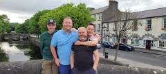

God Bless The Work
As I awake in Galway with a very sore head I can take solace in the fact that at least I’m not sharing the bottom bunk bed with Jimbo unlike Patch. There were some heated negotiations in the early hours of the night before as to who would get that short straw which did not go Patch’s way but ultimately it made no odds as both were comatose for the night anyway thanks to the heavy dose of stout consumed in the hours prior.
There was no time for Jimbo’s cathartic reflections this morning unlike the day before as we had to bid our birthday boy mystery guest Andy farewell and then hit the road for this years mystery city… Westport.
The journey to Westport would include a brief stop at Croagh Patrick “Ireland’s Holy Mountain”. Now there is in an irony in that tag line for the mountain because en route around many winding roads Jimbo was instructed by Patch to initiate an emergency stop in the car on a very rural road and promptly leant out of the car and began to say “Oh My God” many times alongside some nasty sounding noises… I’ll let you fill in the blanks.
We eventually made it to the mountain and I was immediately struck by what a special place it is, that is of course after I quickly shut down any suggestion of climbing the fecking thing. You see this is a famous spot for pilgrimages and legend has it that some headcases do it barefoot - the only pilgrimage I had planned for the day was to get into every pub in Westport! We did have a wee saunter up to see the holy statue and even from that very brief hike up the views of the mountains and sea were stunning as our pictures try to do justice below.
After Patch’s almighty bravery in jumping in the ocean in Galway I demonstrated a more mild version of dipping my feet in the Westport waters before insisting that our own pilgrimage needed to begin urgently if we were to stand a chance of completing it and seeing all those majestic pubs. I shall return to that mountain one day and have a go at it… maybe.
Now the eagled eyed readers of this years blog will have noticed that this years tour name is written in Gaelic. “Craic agus Ceol”translates to “Fun & Music” which is a fitting strap line given there is a folk music festival on in Westport during our stay. Needless to say both fun and music were consumed in enormous quantities alongside a certain traditional black Irish refreshment, (well apart from Patch’s penchant for Sauvignon Blanc) and given this is a pilgrimage after all it was fitting that half way through our leader shocked the locals and walked on water across the river that runs through Westport.
It’s fair to say I’m a massive fan of Galway, Westport and Ireland as a whole. It’s impossible not to have a good time out here and every door you walk through you know you will be met by the likely view of revellers enjoying each others company whether they’ve known each other their whole life or just the last five minutes. Also if you’re lucky towards the end of the evening you might even catch a glimpse of a certain young man from Lurgan having a cheeky Power Nap in the corner of the pub. Seriously though, I truly believe that if the whole human race had a sprinkle of Irish in it then we would all be better off.
So that’s that, another tour in the bag, more dots on the map and memories for a lifetime. Thanks a million Ireland. You’ve been a timely reminder that we should all smile a bit wider, laugh a little louder and be kinder to each other.
Until next year my travelling comrades. Sláinte.
Shauny G.
Photographs
{kind=link}
